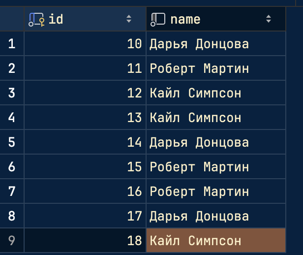
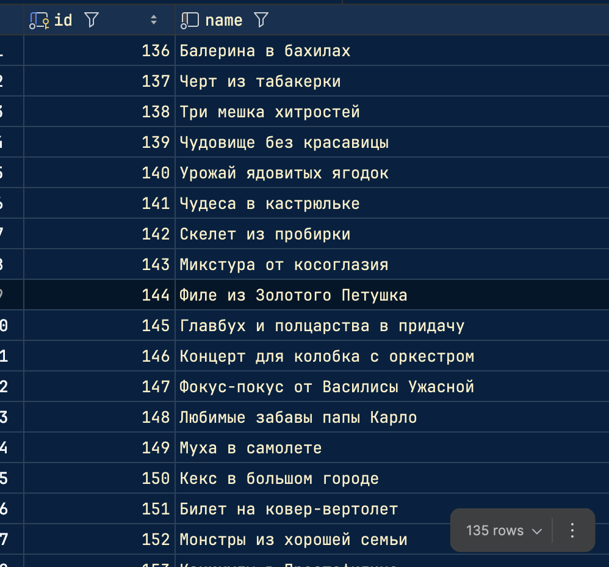

Задача 1. Различия между threading, multiprocessing и async в Python
Задача: Напишите три различных программы на Python, использующие каждый из подходов: threading, multiprocessing и async. Каждая программа должна решать считать сумму всех чисел от 1 до 1000000000. Разделите вычисления на несколько параллельных задач для ускорения выполнения.
asyncio
import asyncio
import time
from students.K3341.Sakhno_Yaroslav.lr2.plt_builder import paint
x = []
y = []
async def calculate_sum_of_range(start, end):
partial_sum = sum(range(start, end))
return partial_sum
async def calculate_sum(border, task_cnt):
start_time = time.time()
cnt = border // task_cnt
tasks = []
for i in range(task_cnt):
start = i * cnt + 1
end = (i + 1) * cnt + 1 if i < task_cnt - 1 else border + 1
task = asyncio.create_task(calculate_sum_of_range(start, end))
tasks.append(task)
sums = await asyncio.gather(*tasks)
result = sum(sums)
end_time = time.time()
x.append(task_cnt)
y.append(end_time - start_time)
print("Выполнено с использованием asyncio")
print("Сумма: ", result)
print("Время:", end_time - start_time, "с")
if __name__ == "__main__":
border = 1000000000
for i in range(2, 3):
# for i in range(25, 26):
asyncio.run(calculate_sum(border, i))
print(x, y)
paint(x, y, "Сумма " + str(border) + " asyncio")
Хорошо работает с задачами, зависящими от ввода/вывода (I/O-bound), в этом случае неэффективен из-за CPU-bound задачи
multiprocessing
import multiprocessing
import time
from students.K3341.Sakhno_Yaroslav.lr2.plt_builder import paint
x = []
y = []
def calculate_sum_of_range(start, end, result):
partial_sum = sum(range(start, end))
result.put(partial_sum)
def calculate_sum(border, processes_cnt):
start_time = time.time()
results = multiprocessing.Queue()
processes = []
cnt = border // processes_cnt
for i in range(processes_cnt):
start = i * cnt + 1
end = (i + 1) * cnt + 1 if i < processes_cnt - 1 else border + 1
process = multiprocessing.Process(target=calculate_sum_of_range, args=(start, end, results))
processes.append(process)
process.start()
for process in processes:
process.join()
result = 0
while not results.empty():
result += results.get()
end_time = time.time()
x.append(processes_cnt)
y.append(end_time - start_time)
print("Выполнено с использованием multiprocessing")
print("Сумма: ", result)
print("Время:", end_time - start_time, "с")
if __name__ == "__main__":
border = 1000000000
for i in range(2, 3):
# for i in range(2, 30):
calculate_sum(border, i)
print(x, y)
paint(x, y, "Сумма " + str(border) + " multiprocessing")
Подходит для CPU-bound задачи, так как каждый процесс исполняется в отдельном пространстве и обходит ограничения GIL, а также эффективно использует многоядерные процессоры.
threading
import threading
import time
from students.K3341.Sakhno_Yaroslav.lr2.plt_builder import paint
x = []
y = []
def calculate_sum_of_range(start, end, result):
partial_sum = sum(range(start, end))
result.append(partial_sum)
def calculate_sum(border, threads_cnt):
start_time = time.time()
results = []
threads = []
cnt = border // threads_cnt
for i in range(threads_cnt):
start = i * cnt + 1
end = (i + 1) * cnt + 1 if i < threads_cnt - 1 else border + 1
thread = threading.Thread(target=calculate_sum_of_range, args=(start, end, results))
threads.append(thread)
thread.start()
for thread in threads:
thread.join()
result = sum(results)
end_time = time.time()
x.append(threads_cnt*1.0)
y.append(end_time - start_time)
print("Выполнено с использованием threading")
print("Сумма: ", result)
print("Кол-во потоков: ", threads_cnt)
print("Время:", end_time - start_time, "с")
if __name__ == "__main__":
border = 1000000000
for i in range(2, 3):
# for i in range(5, 6):
calculate_sum(border, i)
print(x, y)
paint(x, y, "Сумма " + str(border) + " threading")
Работает в пределах одного процесса, деля ресурсы и память, так как это фундаментальное ограничение питона в виже GIL.
| Метод | Время (сек) |
|---|---|
asyncio |
7.201862096786499 |
multiprocessing |
4.245497226715088 |
threading |
7.609512805938721 |
Вывод
Для интенсивных вычислений (CPU-bound) стоит использовать multiprocessing, так как он обходит GIL и позволяет задействовать все доступные ядра процессора.
Если бы задача была связана с работой с файлами, сетью или базами данных (I/O-bound) — asyncio или threading могли бы показать гораздо лучшие результаты.
Задача 2. Параллельный парсинг веб-страниц с сохранением в базу данных
Задача: Напишите программу на Python для параллельного парсинга нескольких веб-страниц с сохранением данных в базу данных с использованием подходов threading, multiprocessing и async. Каждая программа должна парсить информацию с нескольких веб-сайтов, сохранять их в базу данных.
models
from sqlmodel import Field, Relationship, SQLModel
from enum import Enum
from typing import List, Optional
class BookCategory(SQLModel, table=True):
book_id: int = Field(foreign_key="book.id", primary_key=True)
category_id: int = Field(foreign_key="category.id", primary_key=True)
class Category(SQLModel, table=True):
id: int = Field(default=None, primary_key=True)
name: str
books: Optional[List["Book"]] = Relationship(back_populates="categories", link_model=BookCategory)
class Author(SQLModel, table=True):
id: int = Field(default=None, primary_key=True)
name: str
books: Optional[List["Book"]] = Relationship(back_populates="author")
class BookCopy(SQLModel, table=True):
id: int = Field(default=None, primary_key=True)
book_id: Optional[int] = Field(default=None, foreign_key="book.id")
user_id: Optional[int] = Field(default=None, foreign_key="user.id")
class Book(SQLModel, table=True):
id: int = Field(default=None, primary_key=True)
name: str
author_id: Optional[int] = Field(default=None, foreign_key="author.id")
author: Optional[Author] = Relationship(back_populates="books")
categories: Optional[List[Category]] = Relationship(back_populates="books", link_model=BookCategory)
owners: Optional[List["User"]] = Relationship(back_populates="own_books", link_model=BookCopy)
class User(SQLModel, table=True):
id: int = Field(default=None, primary_key=True)
username: str
email: str
password: str
own_books: Optional[List[Book]] = Relationship(back_populates="owners", link_model=BookCopy)
shared_books: Optional[List["Sharing"]] = Relationship(
back_populates="owner",
sa_relationship_kwargs=dict(foreign_keys="[Sharing.owner_id]")
)
borrowed_books: Optional[List["Sharing"]] = Relationship(
back_populates="taking",
sa_relationship_kwargs=dict(foreign_keys="[Sharing.taking_id]")
)
class SharingStatus(Enum):
requested = "requested"
active = "active"
archived = "archived"
class Sharing(SQLModel, table=True):
owner_id: int = Field(foreign_key="user.id")
taking_id: int = Field(foreign_key="user.id")
book_copy_id: int = Field(foreign_key="bookcopy.id")
id: int = Field(default=None, primary_key=True)
owner: Optional["User"] = Relationship(back_populates="shared_books",
sa_relationship_kwargs=dict(foreign_keys="[Sharing.owner_id]")
)
taking: Optional["User"] = Relationship(back_populates="borrowed_books",
sa_relationship_kwargs=dict(foreign_keys="[Sharing.taking_id]")
)
status: SharingStatus = Field(default=SharingStatus.requested)
class CategoryIn(SQLModel):
name: str
class CategoryOut(CategoryIn):
id: int
books: Optional[List["Book"]] = None
class AuthorIn(SQLModel):
name: str
class AuthorOut(AuthorIn):
id: int
books: Optional[List["Book"]] = None
class BookIn(SQLModel):
name: str
author_id: Optional[int] = Field(default=None, foreign_key="author.id")
class BookOut(BookIn):
id: int
author: Optional[Author] = None
categories: Optional[List[Category]] = None
owners: Optional[List[User]] = None
class UserIn(SQLModel):
username: str
email: str
password: str
class UserLogin(SQLModel):
username: str
password: str
class UserPassword(SQLModel):
password: str
class UserOut(UserIn):
id: int
own_books: Optional[List[Book]] = None
shared_books: Optional[List["Sharing"]] = None
borrowed_books: Optional[List["Sharing"]] = None
async
import asyncio
from save_data_async import save_to_db
from parser_async import parse_data
import time
urls = [
"https://www.litres.ru/author/kayl-simpson/",
"https://www.litres.ru/author/robert-s-martin/",
"https://www.litres.ru/author/darya-doncova/"
]
async def parse_and_save(url):
author_info = await parse_data(url)
await save_to_db(author_info)
async def start():
start_time = time.time()
tasks = []
for url in urls:
task = asyncio.create_task(parse_and_save(url))
tasks.append(task)
await asyncio.gather(*tasks)
end_time = time.time()
print("asynio")
print(f"Время: {end_time - start_time} c")
if __name__ == '__main__':
asyncio.run(start())
multiprocessing
import multiprocessing
from parser import parse_data
from save_data import save_to_db
import time
urls = [
"https://www.litres.ru/author/kayl-simpson/",
"https://www.litres.ru/author/robert-s-martin/",
"https://www.litres.ru/author/darya-doncova/"
]
def parse_and_save(chunk):
for url in chunk:
author_info = parse_data(url)
save_to_db(author_info)
def start():
start_time = time.time()
processes_cnt = len(urls)
size = len(urls) // processes_cnt
batches = [urls[i:i + size] for i in range(0, len(urls), size)]
processes = []
for batch in batches:
process = multiprocessing.Process(target=parse_and_save, args=(batch,))
processes.append(process)
process.start()
for process in processes:
process.join()
end_time = time.time()
execution_time = end_time - start_time
print("multiprocessing")
print(f"Время: {execution_time} с")
if __name__ == '__main__':
start()
threading
import threading
from parser import parse_data
from save_data import save_to_db
import time
urls = [
"https://www.litres.ru/author/kayl-simpson/",
"https://www.litres.ru/author/robert-s-martin/",
"https://www.litres.ru/author/darya-doncova/"
]
def parse_and_save(urls):
for url in urls:
author_info = parse_data(url)
save_to_db(author_info)
def start():
start_time = time.time()
threads_cnt = 3
size = len(urls) // threads_cnt
batches = [urls[i:i + size] for i in range(0, len(urls), size)]
threads = []
for batch in batches:
thread = threading.Thread(target=parse_and_save, args=(batch,))
thread.start()
threads.append(thread)
for thread in threads:
thread.join()
end_time = time.time()
execution_time = end_time - start_time
print("threading")
print(f"Время: {execution_time} с")
if __name__ == '__main__':
start()
Программы парсят с сайта литрес трех авторов и их книги и загружают результат в базу данных.


| Метод | Время (сек) |
|---|---|
asyncio |
0.49976301193237305 |
multiprocessing |
2.9438908100128174 |
threading |
1.1627459526062012 |
Вывод
В задаче лучше всего показал asyncio, так как здесь легкие I/O-задачи (веб-запросы, запись в базу, файловые операции). Multiprocessing здесь дольше из-за накладных расходов в виде создания процессов.